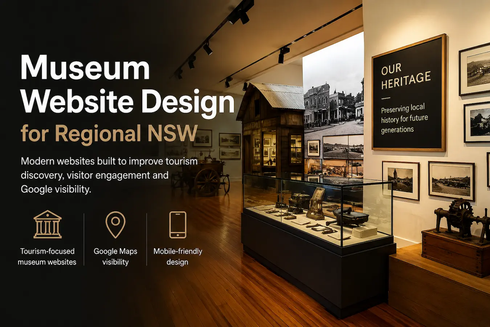
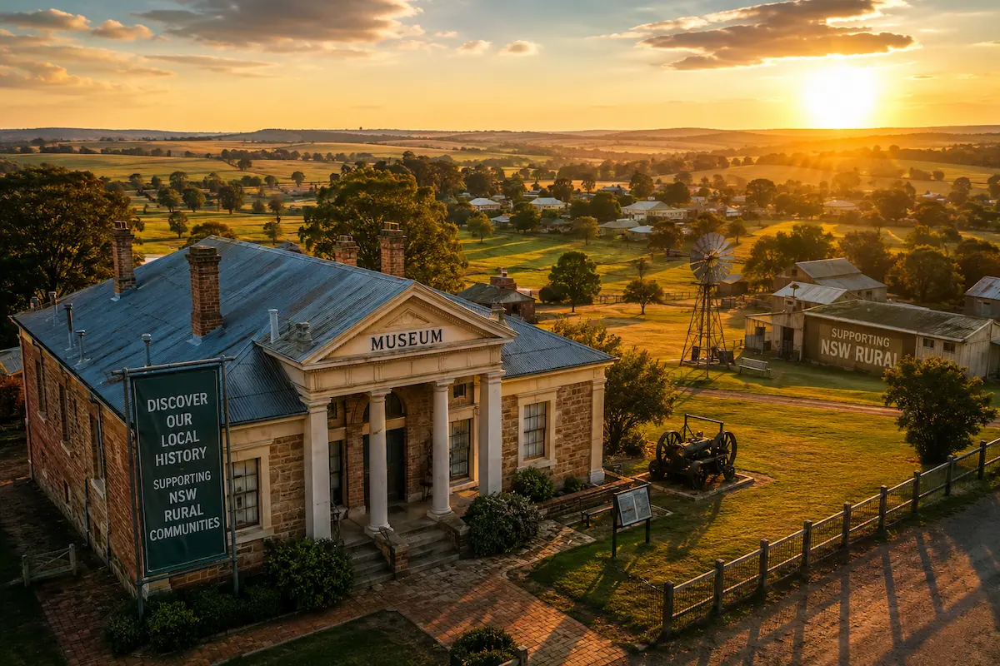
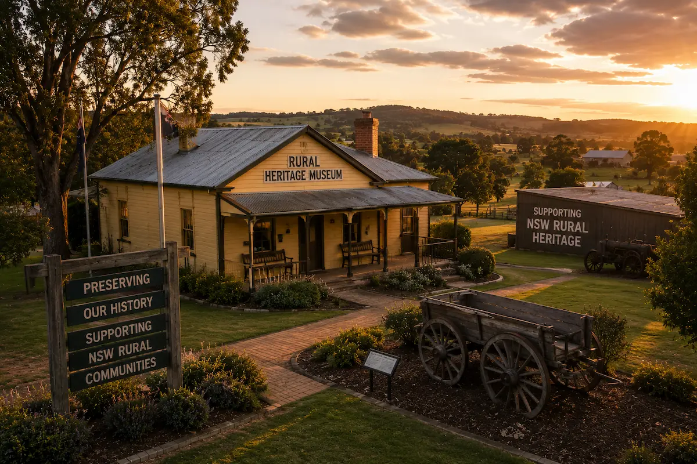

MUSEUM WEBSITE DESIGN
Museum Websites Built for
Regional NSW Tourism
Modern museum websites built to improve tourism discovery, visitor engagement and Google visibility for regional museums and heritage centres across NSW.
Built for museums, heritage centres and cultural attractions that rely on tourism discovery, school visits and regional visitors.
Supporting museums, heritage centres and cultural tourism destinations across regional NSW

TOURISM SEO
Why Museum SEO Matters
Travellers search online before visiting museums and heritage centres. A modern tourism website helps museums appear in Google search results, Maps and regional tourism discovery searches across NSW.
Tourism Discovery
Help visitors discover museums, exhibits and heritage centres through Google search and tourism-related searches.
Mobile Visitors
Designed for travellers researching museums, attractions and local history experiences on mobile devices.
Google Maps Visibility
Improve local visibility and help visitors find your museum through Google Maps and tourism discovery searches.
Heritage Storytelling
Showcase exhibits, collections, regional history and museum experiences with modern layouts and strong visuals.
Fast Website Performance
Fast-loading websites improve user experience for tourists while supporting stronger Google SEO performance.
Regional NSW Tourism
Built specifically for regional museums, heritage attractions and tourism businesses across regional NSW.
FEATURES
Built for Regional Museums & Heritage Centres
Tourism-focused museum websites designed to improve visitor engagement, tourism discovery and Google visibility across regional NSW.
Built for Google
SEO-focused website structure designed to improve tourism visibility and museum discovery through Google search.
Mobile-Friendly
Optimised for travellers researching museums, exhibits and heritage attractions on phones and tablets.
Google Maps Integration
Help visitors easily find your museum, heritage centre or tourism location through Maps visibility.
Fast Performance
Fast-loading museum websites improve user experience, mobile usability and Google SEO performance.
Tourism Branding
Modern layouts and strong visuals help museums and heritage attractions appear more engaging and professional.
Visitor Engagement
Encourage more museum visits, enquiries and educational tourism through a clearer online experience.
REGIONAL NSW TOURISM
Supporting Regional Museums Across NSW
Crane Platform Labs supports regional museums, heritage centres and tourism attractions across regional NSW — helping cultural destinations improve Google visibility, tourism discovery and visitor engagement online.
From local history museums and railway museums to heritage centres and cultural tourism attractions, we build modern tourism websites designed to support regional tourism growth and visitor engagement.
Our websites are designed for Google Search, tourism discovery and mobile visitors while presenting museums and heritage organisations with a clean, modern and professional online presence.


FAQ
Museum Website Questions
Common questions about museum websites, tourism SEO and improving visitor discovery online across regional NSW.
Museums and heritage centres rely heavily on tourism visibility, Google Maps discovery and strong mobile usability to help travellers, families and schools discover regional cultural attractions online.
How do tourists discover museums online?
Most travellers use Google, Google Maps and tourism searches to discover museums, heritage centres and regional attractions while planning trips.
Can museums benefit from SEO?
SEO helps museums improve tourism discovery, Google visibility and local search rankings for visitors researching attractions online.
Why is mobile-friendly design important for museums?
Most tourism traffic now comes from mobile devices, with travellers searching for museums and things to do while travelling.
Can a better museum website increase visitors?
A modern museum website improves trust, visitor engagement and tourism branding while helping attractions appear more professional online.
Why is Google Maps important for museums?
Google Maps helps travellers find museums, opening hours, directions and nearby attractions while exploring regional NSW.
Why do outdated museum websites lose visitors?
Slow loading speeds, poor mobile usability and outdated layouts can reduce trust and discourage visitors from exploring further.
Can museum websites support educational tourism?
Modern museum websites can help attract school visits, educational tourism and regional cultural tourism through clearer information and better visibility.
Why does website speed matter for tourism websites?
Faster websites improve visitor experience, support stronger SEO performance and help travellers access information quickly on mobile devices.
WEBSITE PERFORMANCE
Built For Performance, Accessibility & SEO
Crane Platform Labs builds fast, mobile-friendly and SEO-focused websites designed to improve Google visibility, accessibility, usability and customer trust across regional NSW.
Modern websites should not only look professional but also perform properly across Google Search, mobile devices and modern accessibility standards.
Our websites are built using clean semantic HTML, responsive layouts, lightweight code and SEO-friendly structure designed to support fast loading performance, mobile usability and long-term online visibility.
From tourism websites and local business websites to tradie and regional NSW service websites, we focus on balancing modern design with accessibility, usability, SEO and modern web best practices.
Learn why website performance, accessibility, mobile usability and SEO now play a major role in Google rankings, customer experience and long-term business growth online.

GET STARTED
Improve Your Museum's Online Presence
Professional tourism websites built for museums, heritage centres and regional tourism attractions across NSW.
Built for museums, cultural attractions and heritage centres wanting better tourism visibility, visitor engagement and Google discovery.